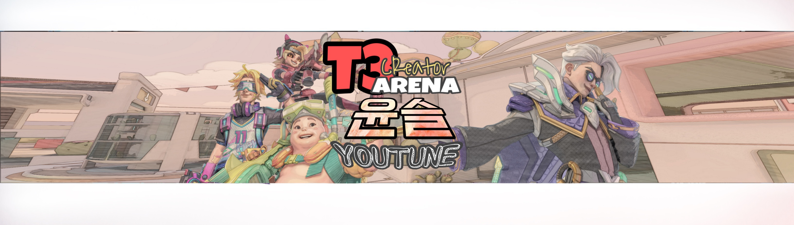

하얀피자
SIMPLE ABOUT ME
안녕하세요. 저는 98년생 윤영돈이라고합니다.
국민대학교 멋쟁이 사자차럼 11기 백엔드 파트이며 크루0팀 소속입니다.
MBTI는 ESFJ 인데 F랑 T는 거의 반반이에요.
양주 모으고, 마시는거 좋아하고 요즘은 버번계열 위스키를 즐겨 마셔요.
아래에 사진 누르면 유튜브 링크로 이동하는데, 작년에 취미로 모바일게임 유튜버 했었어요.

취미라고하기엔, 나름 아시아대회에서 우승도 하고 그랬었네요 ㅎㅎ 자랑 맞아요!
구독하셔도 영상 안올라올거긴한데, 맛집탐방 유튜브로 다시 시작할까 고민중입니다.
긴글 읽어주셔서 감사하고요. 다른피자도 드셔보세요 맛이 좋습니다.
당신 배고프지 않나요?
"I'm hungry"